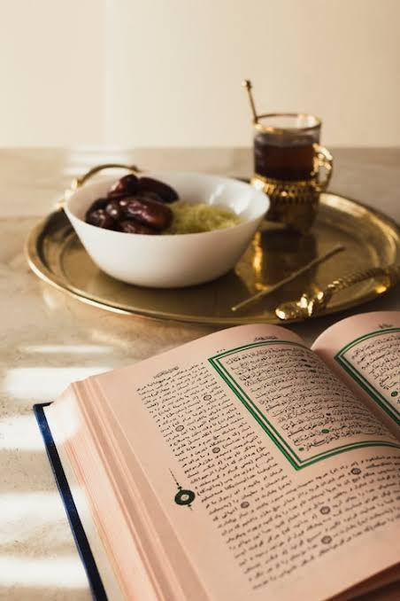

Ruqyah Service
Authentic spiritual healing through Quranic recitation

Ruqyah - Spiritual Healing & Protection
رقیہ قرآنِ مجید کی آیات اور نبی کریم ﷺ کی مسنون دعاؤں کی تلاوت کے ذریعے روحانی شفا حاصل کرنے کا ایک مستند اسلامی طریقہ ہے۔ ہمارے ماہر علماء رقیہ کے سیشنز فراہم کرتے ہیں تاکہ افراد کو روحانی اور جسمانی تکالیف سے شفا، حفاظت اور راحت حاصل ہو سکے۔
About Ruqyah
رقیہ روحانی شفا کا ایک ایسا طریقہ ہے جس کی رہنمائی قرآنِ مجید میں دی گئی ہے اور جس پر نبی کریم ﷺ نے عمل فرمایا۔ اس میں مخصوص قرآنی آیات اور مستند مسنون دعاؤں کی تلاوت کی جاتی ہے، جس کے ذریعے اللہ تعالیٰ سے مختلف تکالیف، بشمول نظرِ بد، جادو اور روحانی پریشانیوں سے حفاظت اور شفا طلب کی جاتی ہے۔
Our Ruqyah service is conducted strictly in accordance with the Quran and Sunnah, ensuring that all practices are authentic and free from any innovations or un-Islamic practices.
Benefits of Ruqyah
روحانی شفا
Find relief from spiritual ailments through authentic Quranic healing.
حفاظت
Receive protection from the evil eye, black magic, and spiritual harm.
ذہنی سکون
Experience inner peace and tranquility through spiritual healing.
جذباتی بہبود
Find relief from anxiety, stress, and emotional disturbances.
مضبوط ایمان
Deepen your connection with Allah and strengthen your faith.
مستند طریقۂ کار
Healing based strictly on the Quran and authentic Sunnah.
Our Ruqyah Process
-
1
Assessment Session
ہمارے عالم آپ کی صورتحال کو سمجھنے اور کسی بھی ممکنہ روحانی پریشانی کی نشاندہی کرنے کے لیے تفصیلی جائزہ لیتے ہیں۔
-
2
Ruqyah Session
قرآنِ مجید کی تلاوت اور مستند مسنون دعاؤں پر مشتمل آپ کے لیے مخصوص رقیہ کا سیشن حاصل کریں۔
-
3
Guidance & Advice
اپنے شفا کے سفر میں معاونت کے لیے عملی روحانی رہنمائی اور روزانہ کی مسنون عبادات و اذکار کے بارے میں مشورہ حاصل کریں۔
-
4
Follow-up Support
مسلسل شفا اور حفاظت کو یقینی بنانے کے لیے مستقل رہنمائی، معاونت اور فالو اَپ سیشنز فراہم کیے جاتے ہیں۔
What to Expect
آپ کے رقیہ سیشن کے دوران ہمارے عالم پُرسکون اور یکسو ماحول میں قرآنِ مجید کی آیات اور مستند مسنون دعاؤں کی تلاوت کریں گے۔ یہ سیشن آپ کی رازداری اور عزتِ نفس کا مکمل خیال رکھتے ہوئے انجام دیا جاتا ہے۔ سیشن کے دوران آپ کو مختلف جسمانی یا جذباتی کیفیات محسوس ہو سکتی ہیں، جو شفا کے عمل کا ایک معمول کا حصہ ہیں۔
After the session, you will receive guidance on daily practices, recommended supplications, and lifestyle adjustments to support your continued healing and spiritual well-being.